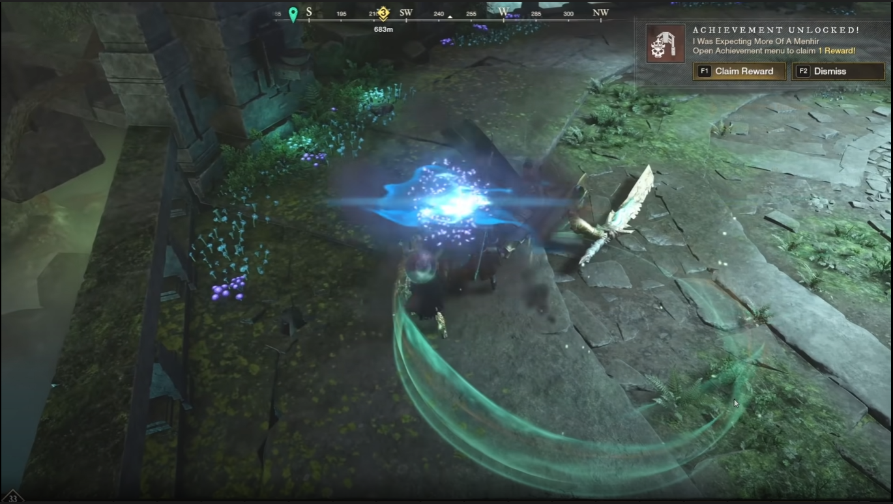

On this page you can submit the fastest times of your Expedition runs in New World. In order to submit your speedrun please email us at newworldtourneys@gmail.com with the following information:
Example 2:
Recorded footage of the COMPLETE expedition is required for the speedrun to be accepted by the reviewer. COMPLETE = From the loading screen of the beginning of the instance to the frame all other interfaces diseappear and the victory sign begins to show up on the screen. The review process of the speedruns submitted to us may take a few days to a week to complete so do not be alarmed if we do not answer straight away, we will reply to your email with either "accepted" or "rejected" depending on the quality of your information provided. You can see the leaderboards of each expedition sorted by server region on the Dungeon Speedruns page. Thank you for participating in this game! Good luck!